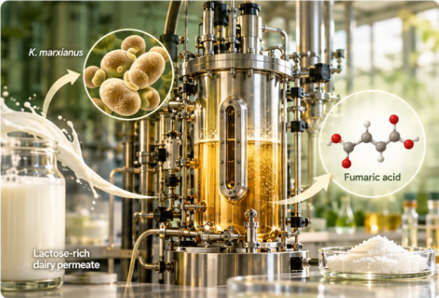

RESEARCH FEATURE
VINCENT MARTIN LAB – AGROPUR COLLABORATION
From whey permeate to fumaric acid
Published research

This published collaboration explores Kluyveromyces marxianus as a platform for converting lactose-rich dairy permeate into fumaric acid. The work combines host evaluation, genetic variant engineering, and fermentation optimization to demonstrate a viable bioprocess route from dairy side streams to a valuable biochemical.
- K. marxianus as a host for whey valorization
- Fermentation optimization on lactose-rich dairy permeate
- Published route to fumaric acid production